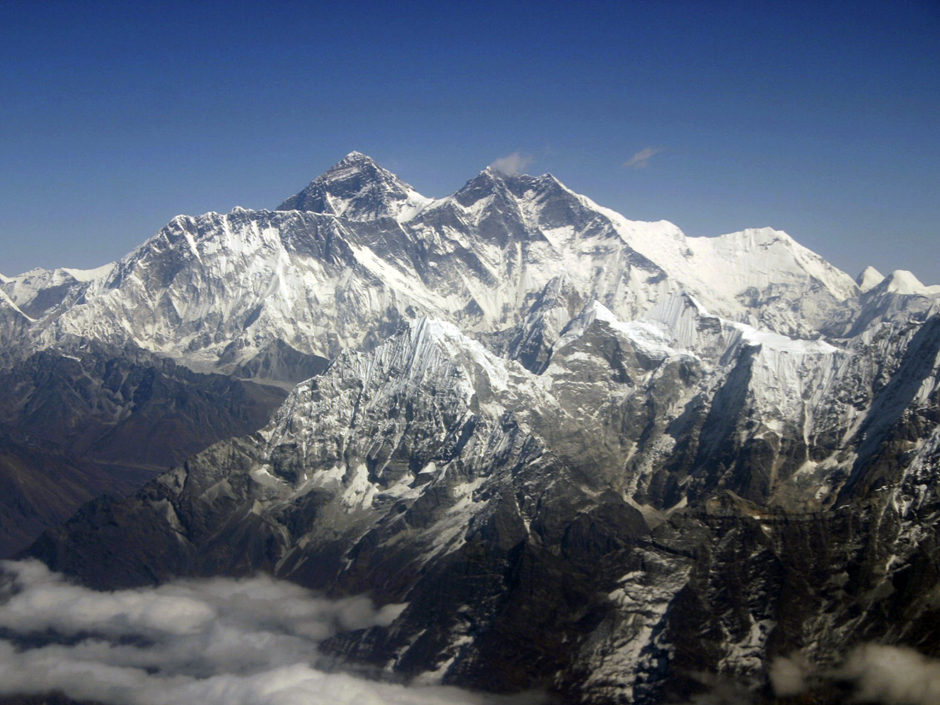

Mountains
Find the best mountain pictures and mountain images available on our site. High-quality pictures of mountain and mountain photos for you to download and use commercially.
mountains list
Everest Nepal 8,848
K2 (Godwin Austin) India 8,611
Kanchanjunga India 8,598
Makalu Nepal-China 8,481
Dhaulagiri Nepal 8,172
Cho Oyu Nepal 8,153
Nanga Parbat India 8,126
Annapurna Nepal 8,080
Hidden Peak India 8,068
Nandadevi India 7,813
Welcome to mounrain

The current official elevation of 8,848 m (29,029 ft), recognized by China and Nepal, was established by a 1955 Indian survey and subsequently confirmed by a Chinese survey in 1975.[1] In 2005, China remeasured the rock height of the mountain, with a result of 8844.43 m. There followed an argument between China and Nepal as to whether the official height should be the rock height (8,844 m., China) or the snow height (8,848 m., Nepal). In 2010, an agreement was reached by both sides that the height of Everest is 8,848 m, and Nepal recognizes China's claim that the rock height of Everest is 8,844 m.[5]
Text
K2 (Godwin Austin) India 8,611
Kanchanjunga India 8,598
Makalu Nepal-China 8,481
Dhaulagiri Nepal 8,172
Cho Oyu Nepal 8,153
Nanga Parbat India 8,126
Annapurna Nepal 8,080
Hidden Peak India 8,068
Nandadevi India 7,813
Images
Dhaulagiri Nepal 8,172Annapurna Nepal 8,080
Hidden Peak India 8,068
mountain notes
1 History
2 Early surveys
3 Name
4 Surveys
4.1 Comparisons
5 Geology
6 Flora and fauna
7 Environment
Image
Find the best mountain pictures and mountain images available on our site. High-quality pictures of mountain and mountain photos for you to download and use commercially